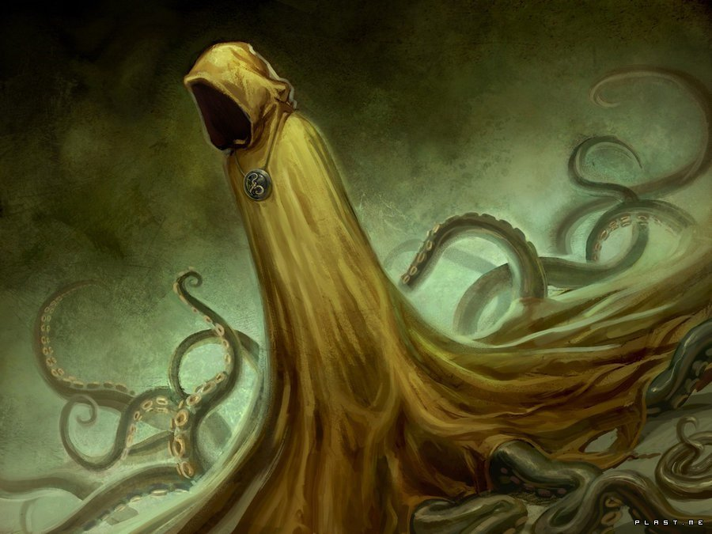

Огромный, похожий на осьминога, но куда колоссальней любого головоногого, невыразимый и неназываемый, Хастур обитает в черном озере Хали на одной из планет близ Адьдебарана» где нашел пристанище после того, как был сброшен с Земли и скитался во внешнем космическом пространстве. Он повелевает ветром, дующим меж звезд и переносящим жутких птиц бьякхи, похожих на летучих мышей. Их седлают его слуги, чтобы преследовать и уничтожать насекомоподобных Ми-го и глубоководных отпрысков Дагона.
Вместе со своим единоутробным братом Ктулху Хастур ведет непрекращающуюся борьбу за то, чтобы воплотиться на Земле, - и горе тому человеку, кого он изберет своим пристанищем. Когда в небе висят звезды Альдебарана и Гиад, тела этих несчастных покрываются мерзкими складками толстой чешуйчатой кожи, а руки, лишаясь костей, извиваются, словно щупальца. Но эти твари не способны вместить сознание Хастура и обречены лишь на нескончаемое безумие и вторящие ветру межзвездной бездны завывания: «Текели-ли, текели-ли, текели-ли…»
Впервые упомянут в рассказе Амброза Бирса «Пастух Гаита» (Haita The Shepherd, 1891), затем заимствован Робертом Чемберсом в его сборнике «Король в жёлтом» (The King in Yellow, 1895), а впоследствии введен в Мифы Ктулфу Августом Дерлетом в рассказах «Возвращение Хастура» (The Return of Hastur, 1939), «Окно в мансарде» (The Gable Window, 1957) и других.
